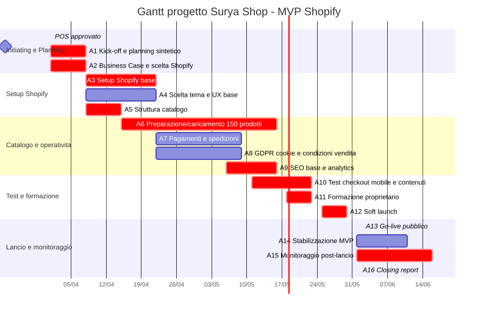

Gantt e Project Network¶
1. Premessa¶
La pianificazione considera:
- Avvio operativo: 1 aprile 2026;
- Go-live pubblico: 1 giugno 2026;
- Durata MVP: 10 settimane, con go-live in settimana 9 e stabilizzazione iniziale fino al 10 giugno;
- Monitoraggio post-lancio: 1 - 15 giugno 2026.
Il progetto è pianificato con attività parzialmente sovrapposte per rispettare tempi e budget.
2. Milestone¶
| ID | Milestone | Data |
|---|---|---|
| M1 | POS approvato | 31 marzo 2026 |
| M2 | Avvio progetto | 1 aprile 2026 |
| M3 | Shopify confermato | 7 aprile 2026 |
| M4 | Setup Shopify base completato | 21 aprile 2026 |
| M5 | Pagamenti/spedizioni configurati | 8 maggio 2026 |
| M6 | Catalogo MVP completato | 15 maggio 2026 |
| M7 | Test checkout completati | 22 maggio 2026 |
| M8 | Formazione completata | 22 maggio 2026 |
| M9 | Soft launch | 25 maggio 2026 |
| M10 | Go-live pubblico | 1 giugno 2026 |
| M11 | Stabilizzazione MVP completata | 10 giugno 2026 |
| M12 | Report post-lancio | 15 giugno 2026 |
3. Attività, durata e dipendenze¶
| ID | Attività | Periodo | Durata | Dipendenze |
|---|---|---|---|---|
| A1 | Kick-off e planning sintetico | 1 - 7 aprile | 1 settimana | POS |
| A2 | Business Case e scelta Shopify | 1 - 7 aprile | 1 settimana | POS, input da A1 |
| A3 | Setup Shopify base | 8 - 21 aprile | 2 settimane | A2 |
| A4 | Scelta tema e UX base | 8 - 21 aprile | 2 settimane | A2 |
| A5 | Struttura catalogo | 8 - 14 aprile | 1 settimana | A2 |
| A6 | Preparazione/caricamento 150 prodotti | 15 aprile - 15 maggio | 4,5 settimane | A5 |
| A7 | Pagamenti e spedizioni | 22 aprile - 8 maggio | 2,5 settimane | A3 |
| A8 | GDPR, cookie e condizioni vendita | 22 aprile - 8 maggio | 2,5 settimane | A1 |
| A9 | SEO base e analytics | 6 - 15 maggio | 1,5 settimane | A3, A6 parziale |
| A10 | Test checkout, mobile e contenuti | 11 - 22 maggio | 2 settimane | A4, A5, A7, A8, A9 parziale |
| A11 | Formazione proprietario | 18 - 22 maggio | 1 settimana | A3, A6 parziale |
| A12 | Soft launch | 25 - 29 maggio | 1 settimana | A10, A11 |
| A13 | Go-live pubblico | 1 giugno | 1 giorno | A12 |
| A14 | Stabilizzazione MVP | 1 - 10 giugno | 1,5 settimane | A13 |
| A15 | Monitoraggio post-lancio | 1 - 15 giugno | 2 settimane | A13 |
| A16 | Closing report | 15 giugno | 1 giorno | A15 |
4. Diagramma Gantt¶

Il Gantt rappresenta la distribuzione temporale delle attività, mentre il PERT evidenzia le relazioni logiche tra attività.
Alcune dipendenze sono da intendersi come dipendenze parziali o progressive: in particolare, A9 e A11 possono iniziare quando il caricamento prodotti A6 è sufficientemente avanzato, e A10 può iniziare quando SEO/analytics A9 è configurata almeno nella sua parte essenziale.
5. Critical path senza interdipendenze¶
Il percorso critico realistico deve considerare anche le interdipendenze tra le attività.
Per questo motivo viene fornito il diagramma di PERT nella sezione sottostante.
6. Dipendenze principali¶
Catalogo¶
Il catalogo è critico perché 150 prodotti richiedono immagini, descrizioni, prezzi e varianti. Se il catalogo non è completo, il sito può essere tecnicamente pronto ma non pubblicabile.
Pagamenti e spedizioni¶
Checkout, pagamenti e spedizioni devono essere testati prima del soft launch. La configurazione dei pagamenti deve considerare anche i tempi tecnici di attivazione o verifica del conto bancario.
GDPR e policy¶
Privacy, cookie, resi e condizioni vendita sono condizioni di go-live.
Formazione¶
Poiché viene formata una sola persona, la formazione è una dipendenza critica. Senza autonomia minima del E-commerce specialist, il progetto non può essere considerato completato.
7. Analisi PERT e calcolo del percorso critico¶
7.1 Premessa metodologica¶
Per rafforzare la pianificazione temporale del progetto è stata applicata una logica PERT, utile per rappresentare le dipendenze tra attività e calcolare il percorso critico.
Il PERT viene utilizzato con una stima a tre punti:
dove:
- O = durata ottimistica;
- M = durata più probabile;
- P = durata pessimistica;
- TE = durata attesa.
Le durate sono espresse in giorni lavorativi equivalenti. Il calcolo è coerente con la pianificazione complessiva del progetto, che prevede avvio il 1 aprile 2026, go-live il 1 giugno 2026 e monitoraggio post-lancio fino al 15 giugno 2026.
7.2 Tabella PERT delle attività¶
| ID | Attività | Predecessori | O | M | P | TE |
|---|---|---|---|---|---|---|
| A1 | Kick-off e planning sintetico | - | 1 | 2 | 3 | 2,00 |
| A2 | Business Case e scelta Shopify | A1 | 2 | 3 | 5 | 3,17 |
| A3 | Setup Shopify base | A2 | 6 | 8 | 12 | 8,33 |
| A4 | Scelta tema e UX base | A2 | 5 | 8 | 12 | 8,17 |
| A5 | Struttura catalogo | A2 | 3 | 4 | 6 | 4,17 |
| A6 | Preparazione/caricamento 150 prodotti | A5 | 15 | 18 | 24 | 18,50 |
| A7 | Pagamenti e spedizioni | A3 | 5 | 7 | 10 | 7,17 |
| A8 | GDPR, cookie e condizioni vendita | A1 | 5 | 7 | 11 | 7,33 |
| A9 | SEO base e analytics | A3, A6 | 4 | 5 | 8 | 5,33 |
| A10 | Test checkout, mobile e contenuti | A4, A6, A7, A8, A9 | 4 | 5 | 8 | 5,33 |
| A11 | Formazione proprietario | A3, A6 | 2 | 3 | 5 | 3,17 |
| A12 | Soft launch | A10, A11 | 2 | 3 | 5 | 3,17 |
| A13 | Go-live pubblico | A12 | 0 | 0 | 0 | 0,00 |
| A14 | Stabilizzazione MVP | A13 | 5 | 7 | 10 | 7,17 |
| A15 | Monitoraggio post-lancio | A13 | 8 | 10 | 14 | 10,33 |
| A16 | Closing report | A15 | 1 | 1 | 2 | 1,17 |
7.3 Diagramma PERT¶

7.4 Critical Path¶
Il percorso critico fino al go-live pubblico è:
A1 → A2 → A5 → A6 → A9 → A10 → A12 → A13
Risultato più veritiero poiché considera anche le interdipendenze tra le attività.
7.5 Interpretazione PERT¶
Il percorso critico evidenzia che il principale vincolo del progetto non è la configurazione tecnica di Shopify, ma la preparazione del catalogo e il completamento delle attività necessarie al test e al go-live.
Le attività più critiche sono:
- A5 - Struttura catalogo: Se la struttura del catalogo non viene definita rapidamente, il caricamento dei 150 prodotti slitta;
- A6 - Preparazione/caricamento 150 prodotti: È l’attività più lunga e delicata. Fotografie, descrizioni, prezzi e varianti devono essere gestiti con disciplina;
- A9 - SEO base e analytics: Dipende dal catalogo e deve essere completata prima dei test finali;
- A10 - Test checkout, mobile e contenuti: È una barriera di qualità prima del soft launch;
- A12 - Soft launch: Serve a validare il sito prima della pubblicazione pubblica;
- A15 - Monitoraggio post-lancio: È critico per il closing complessivo, perché il report finale dipende dalla raccolta dei dati delle prime due settimane.
A15 non appartiene al percorso critico fino al go-live, ma è critica per la chiusura progettuale e per il report finale.